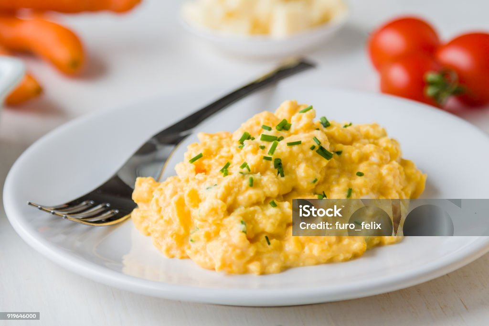

Easy Scrambled Eggs

Ingredients
- 3 large eggs
- 1 tbsp butter (or oil)
- Salt (to taste)Salt (to taste)
- Black pepper (to taste)
- Fresh herbs (optional, like chives or parsley)
Steps
- Beat the eggs: Crack the eggs into a bowl, and whisk them until well combined. Add a pinch of salt and pepper.
- Heat the pan: In a non-stick skillet, heat butter over medium-low heat until melted and foamy.Heat the pan: In a non-stick skillet, heat butter over medium-low heat until melted and foamy.
- Cook the eggs: Pour the beaten eggs into the pan and let them sit for a few seconds. Then, gently stir with a spatula, pushing the eggs from the edges toward the center.
- Scramble: Continue to cook and stir gently until the eggs are just set, soft, and creamy. Avoid overcooking.
- Serve: Season with more salt and pepper, and garnish with fresh herbs if desired. Serve immediately.